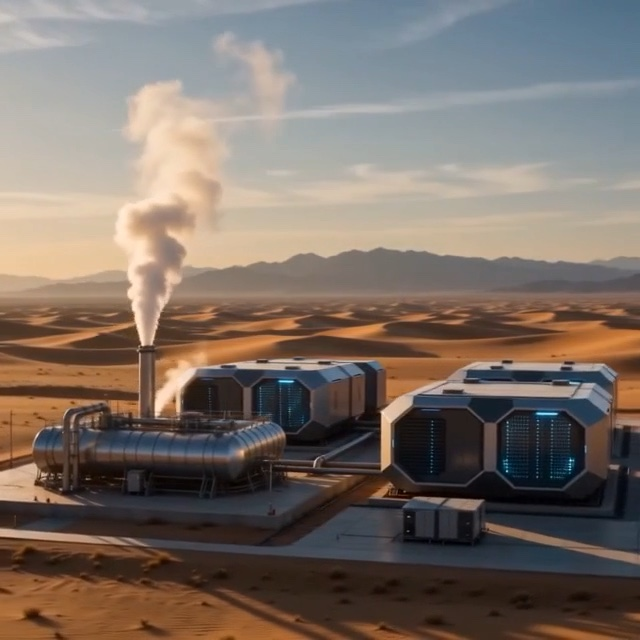
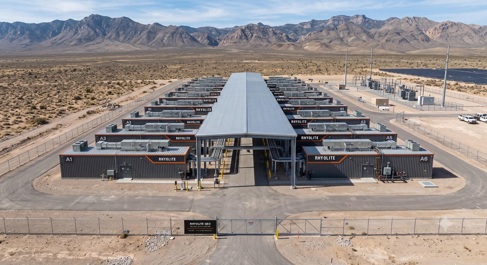
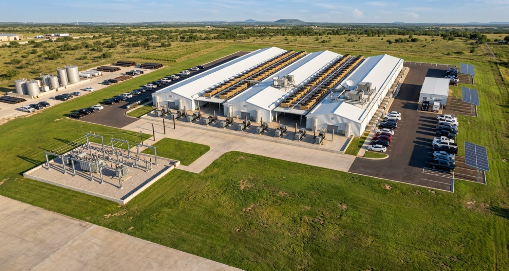
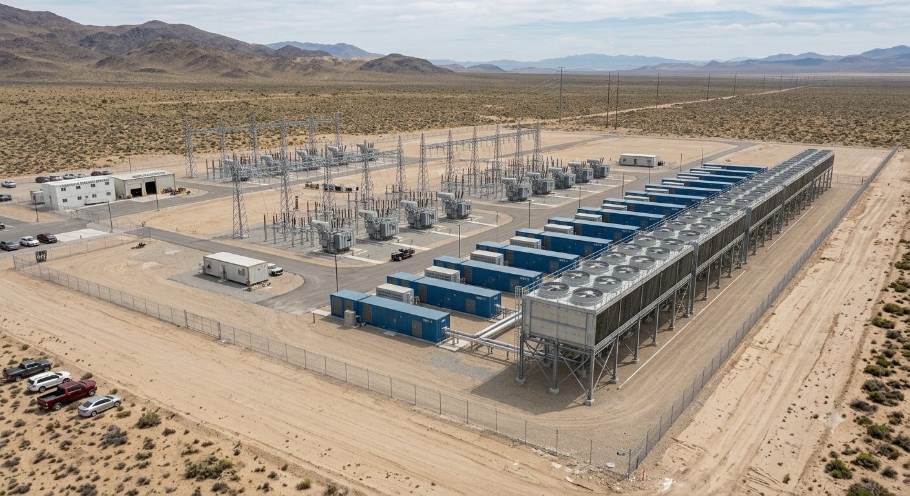
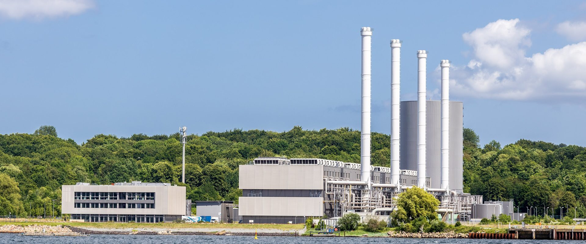
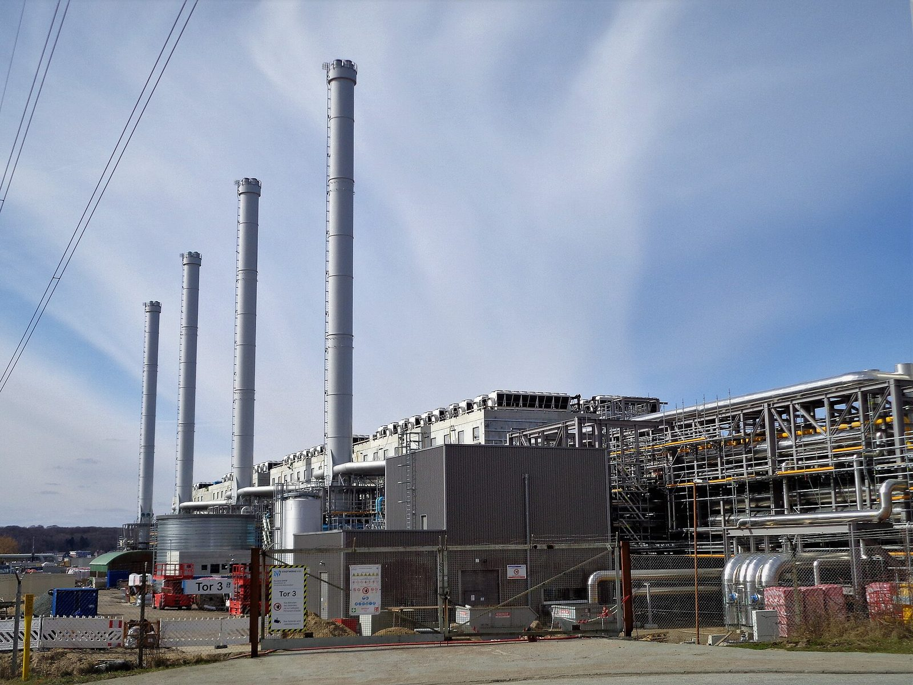
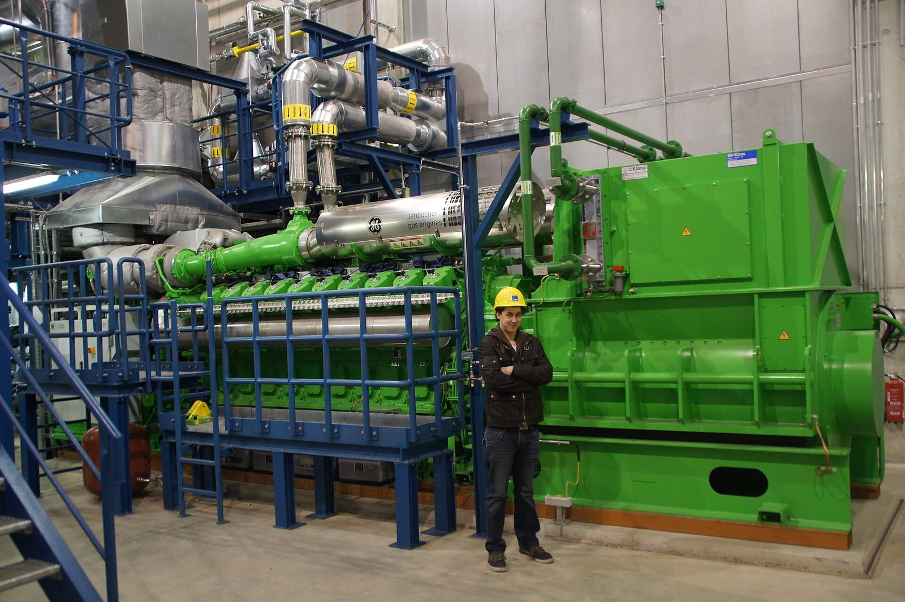
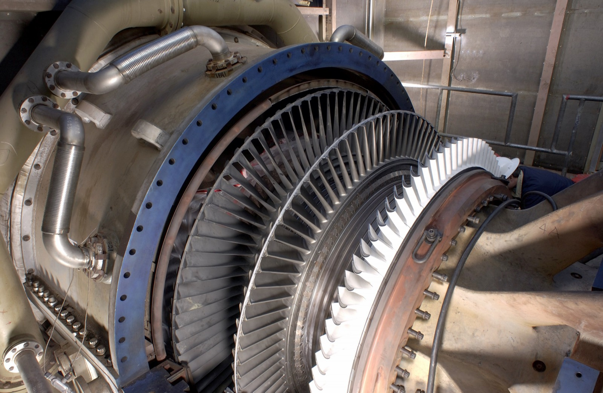

Generation behind the meter
Gas engines and fuel cells carry the volume at existing gas hubs. Solar, wind, geothermal and nuclear neighbors co-locate, and every hour they deliver is fuel not burned.
How geothermal pairs with gas
Each power system is coupled to the AI factory it feeds, and the factories are joined into one larger system. The load is built to the power that stands beside it.
Gas engines and fuel cells carry the volume at existing gas hubs. Solar, wind, geothermal and nuclear neighbors co-locate, and every hour they deliver is fuel not burned.
How geothermal pairs with gasStandard modules from 10 MW to a 47 MW self-powered site, on an 800 volt DC ring from engine to rack. A single chip cycle retires the racks, not the building.
See Glass BallHigh-speed Ethernet over fiber joins the smaller data centers as nodes into one larger system, so ten island sites can work as a campus without its grid tie.
Bring us a site
A 91.5 acre parcel beside I-40, east of Henryetta. The hall and its power are drawn at one size for the first time: every row of racks has its own fuel cell stamp and its own 800 volt DC bus, with no rectifier and no UPS between the gas pipe and the rack.
You hold land, a closed plant or a gas tap. We run it through the siting engine: five steps, seven fatal screens.
You need megawatts and a date. We bring the power, the hall and the network; you bring the GPUs and the fit-out.
You bring capital or a neighbor's power. Every project is priced from fuel to token in a sourced pro forma before land is taken.

Tilt-up walls, a pad, a power spine and a fence. The generation yard is permitted for the last engine on the first day, and the racks arrive a row at a time against demand that is already signed.
Illustrative design rendering · 30 MW tilt-up campusOur design renderings, and the reciprocating-engine plants already running elsewhere that show what the generation side becomes. Drag or scroll to look closer.





Roughly where, roughly how much power, and when you need it. Email is the whole process: no form, no sequence of follow-ups, no newsletter.
384 racks of AI computing on 36 Bloom fuel cell stamps, running as an island. No grid tie, no utility queue, and a hall that comes up a row at a time.
Glass Ball sits beside I-40, 2.3 miles east of Henryetta. ONEOK's gas line runs 2.47 miles to the north-west, and PSO's Henryetta 138 kV substation is 2.29 miles away for construction power. A grow facility was planned on the parcel in 2018 and never built.
The county site screen ranked two nearby spots at 82 and 80 out of 100 on resources. They stand behind Glass Ball as alternates.
At a 77.2 MW peak the hall is above Oklahoma's 75 MW large load line, where the queue is about five years and a large transformer alone takes three to four. Engines at this load cross the formaldehyde line where the air permit changes class.
Fuel cells make no formaldehyde and come up one stamp at a time.
Every row of 16 racks has its own stamp of ten 325 kW skids feeding an 800 volt DC row bus. A row runs on eight of its ten skids, so the two spares are the backup. Ultracapacitors on each bus carry the GPUs' swings while the stacks ramp.
Each pod has a second stamp for its cooling. Twelve yards of dry condensers reject the heat by thermosyphon, with no process water.
One row of 24. No rectifier, no UPS. Simplified from sheet E/M of drawing set REV B.
One row of 24, drawn as a walk-through. Simplified from drawing set REV B.
Illustrative sequence. Each stamp is commissioned on its own, so the hall can run part-built.
Fuel cell quote, firm gas requests, a parcel option, construction power.
Survey, title and a Phase I run in parallel. Under $1 million at risk.
Firm transport signed, easements for the lateral, an anchor tenant letter.
Equity, debt term sheet, independent engineer. Notice to proceed at month 12.
Shell, pads and cooling yards go up. Each stamp is commissioned on its own.
The hall is offered to one anchor tenant who brings the GPUs. Send us your load and your date.
Finding the site, evaluating it and the resource under it, securing the land and the right-of-way, and bringing power, gas and fiber to the fence. The same work that put Glass Ball where it is, offered to others.
A site is only as good as what reaches it. We work the whole path from a county map to a parcel with gas, wire and fiber at its edge, and hand back a site file you can build or bank on.
Every parcel in the search area scored on the resources a build needs, and the short list handed back with the reasons.
Field visits, title and environmental checks, and the routes for gas, power and fiber drawn and priced.
Options, leases and easements signed, so the site is held before money goes into the build.
Send us the area and what has to reach it. We will tell you what the ground says.
When the hall sits beside a geothermal plant, there is no gas line. The plant carries the load and a battery system sits between it and the racks: firm output around the clock, no fuel to buy, and cooling from the same ground.
A data center is the least forgiving load there is: continuous, indifferent to the weather, and expected to hold better than 99.99% uptime. Beside a geothermal plant there is no pipeline to lean on, so the ground carries the base and a battery system carries everything that has to happen fast.
Both sit on the same 800 volt DC ring. The binary unit runs flat out as the base. The battery takes the swings a training run puts on the bus, rides through a well or a turbine dropping out while the plant rebalances, and carries the hall through maintenance. It is sized for speed and ride-through, not to store a night, because the ground does not set the way the sun does.
Concept. Geothermal fluid stays in a closed loop and is reinjected; nothing is vented.
Geothermal carries the highest capacity factor of any generating technology, renewable or otherwise, and it is firm on its own. The battery beside it handles speed, not supply.
CO₂ equivalent per kWh. At 50 MW and a 95% capacity factor, about 416 GWh a year, geothermal in place of gas avoids on the order of 170,000 to 180,000 tonnes of CO₂ every year.
Cooling is 30 to 40% of what a data center consumes, and a power contract normally cannot touch it. Unless the power comes from the ground.
Heat from generation runs absorption chillers directly, displacing electric mechanical cooling, and pays back hardest in the hot climates where conventional cooling is worst.
Full geothermal integration in a cold climate approaches 1.03. Captured properly, powering and cooling from one resource improves project economics by 20 to 40%.
The heat source is the Earth. There is no commodity to hedge and no fuel escalator to negotiate. Operations and maintenance run 2 to 5% of installed cost a year and do not move with a fuel market or a rate case.
With no gas line to the site, no fuel price appears anywhere in the power cost. Every megawatt-hour comes from the ground, and the battery only moves it in time.
Most of the plant is underground, so the generation and the hall that uses it share one parcel instead of competing for it.
An ordinary resource temperature across a great deal of the western United States. The resource does not have to be exotic to be useful.
A secondary working fluid turns the turbine and the geothermal fluid is fully reinjected, so direct emissions are near zero.
Not a plant a data center has to be scaled up to meet. It is a plant a data center already fits.
Deep under the Gulf Coast, hot brine sits sealed at pressures well above hydrostatic, carrying natural gas dissolved in it. A geopressured well brings all three to the surface at once, and a hybrid plant turns every one of them into power. No pipeline comes in: the only gas is what the brine carries up, burned at the wellhead.
The brine leaves the separator hot enough to run a closed-loop binary turbine, then goes back down the injection well.
Gas that breaks out of the brine at the separator fuels engines on site. Their exhaust heat goes back into the binary cycle instead of up the stack.
The brine arrives under high pressure, a third stream a hydraulic turbine can take ahead of the separator.
The U.S. Department of Energy ran a hybrid geopressured plant at Pleasant Bayou on the Texas Gulf Coast from October 1989 to May 1990, gas engines and a binary turbine on one brine stream, selling power to the local utility. The run ended because the injection well needed rework, not the plant.
DOE, Geopressured-Geothermal Hybrid Cycle Power Plant (1991) and Eaton Operating Co. final contract report (1992). Gross output was 650 kW of gas engines plus 541 kW of binary turbine. Uplift is the hybrid's net output over a separate binary plant plus a separate fossil plant on the same brine and gas, across 280 to 360 °F resources.
The hall is fast because it repeats. The resource is slow because it has to be proven, and pretending otherwise is how geothermal projects get into trouble. So the first halls go beside plants already generating, and the battery, not a gas line, smooths each step up as a phase comes on.
Temperature at depth, the wells and surveys somebody already paid for, the output a plant has to spare, and the distance to the fiber. A resource is ranked before any land is taken.
Confirming a reservoir is the expensive step, so the first pairings sit beside plants already generating, where somebody else drilled and proved it years ago.
Wellfield phases follow building phases, each triggered by how full the last one is, so drilled capacity and installed racks move together. Racks come on only against output already proven.
Resource assessment. A Great Basin screen of the developable resource measured against the operating fleet, a master assessment of the Texas geopressured resource, and drill-cluster ranking with field-size estimates, with the paper resource and the recoverable resource kept apart.
What is changing. Global capacity heads from about 16 GW in 2023 to 25 to 30 GW by 2030. Drilling is the cost, and new methods could cut well cost by 50 to 70%. Supercritical rock above 400 °C could yield five to ten times the power per well.
We pair it with a battery system and build the hall beside it. Send us the site, the temperature and the date.
We join remote, right-sized sites into one compute fabric over a fiber network of their own. Each site is built to the power that is already there. Together they work as one.
A single giant campus needs one interconnect sized to a city, one water draw, one town to absorb years of construction, and it sits under one storm track. When it waits, all of it waits. When it goes down, all of it goes down.
Spread across sites, each of those is a fraction. A site that fits the gas lateral or the geothermal unit already beside it gets built at that size, and comes online when its own power does, not when a gigawatt transmission upgrade finally clears.
A row stamp, a pod, a hall: each site matches the gas, heat or wire it already has, so nothing waits on a generation project bigger than the place can carry.
Every site energizes on its own schedule and joins the fabric the day its fiber lights. Capacity arrives in steps instead of all at once at the end.
Land, water, traffic and construction spread across counties. No single community absorbs a gigawatt, and no single permit holds the whole program.
Weather, a fuel event or a fiber cut is contained to one node. The fabric routes around it and the rest of the sites keep working.
Traffic between sites stays on fiber we route, secure and light, never on a shared public path.
The next increment is another site on the ring, placed where the next block of power is, not another building squeezed onto the same parcel.
Six to nine halls on a ring of dedicated fiber with one cross-link. Click a span to cut it or a site to take it offline, and the fabric finds the next shortest path. Pick six, seven, eight or nine halls, and the view menu switches the picture: the topology, the optics each span needs, any path between two sites, the latency a training step pays, and the capacity on the glass.
Pick a failure, or click any span or site on the map.
Spans to 80 km run 800G ZR pluggables straight in the switch, transceiver to transceiver, with no transponder shelf. 80 to 120 km needs ZR+ optics and a tighter loss budget. Past 120 km the span needs an amplified line system with a powered hut mid-span, or a site placed closer. Placing sites inside the ZR reach keeps the network commodity.
Every data-parallel training step ends in a ring all-reduce: each shard passes to the next rank and around. We number the ranks in ring order, so every logical hop is a physical nearest-neighbour hop and no span carries two flows. Cut a span and the ring closes the other way, at a longer term. Fine for training with large steps; not for work that syncs many times a second.
Each span is one cable of 96 to 144 fibers. Coherent 800G waves across the C and L bands, about 250 a span, carry roughly 200 Tb/s each way. The east and west pairs ride separate ducts where the right of way allows, and the spare pairs take maintenance without taking a direction down.
So we place work by how tightly it has to talk, and place sites by the distances that work can stand. Route miles always run longer than the straight line, and we price the real route.
GPU-to-GPU traffic that has to finish every step stays inside one site, on its own switch fabric.
Close enough to share storage, mirror data synchronously and split jobs that talk often.
Jobs that exchange results on a schedule, checkpoints and replicas, batch runs, and inference served close to its users.
A dedicated network from the duct up. Dozens of wavelengths share each fiber pair, each one carrying hundreds of gigabits, and two diverse routes protect every span.
We are not starting from a blank map. Our site services team has already done extensive work routing fiber optic paths, so the first private network configurations are under way.
The same right-of-way, landman and permit work that brings a gas lateral to a site brings the fiber, along two paths that never share a trench.
Fiber built or secured end to end, line system installed, waves turned up and tested before the first rack ships.
Each new site lands on the ring as its power comes on, and the fabric grows by one node with no outage to the rest.
Send us the locations and the power at each. We will draw the network that joins them.